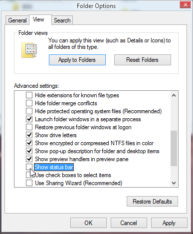
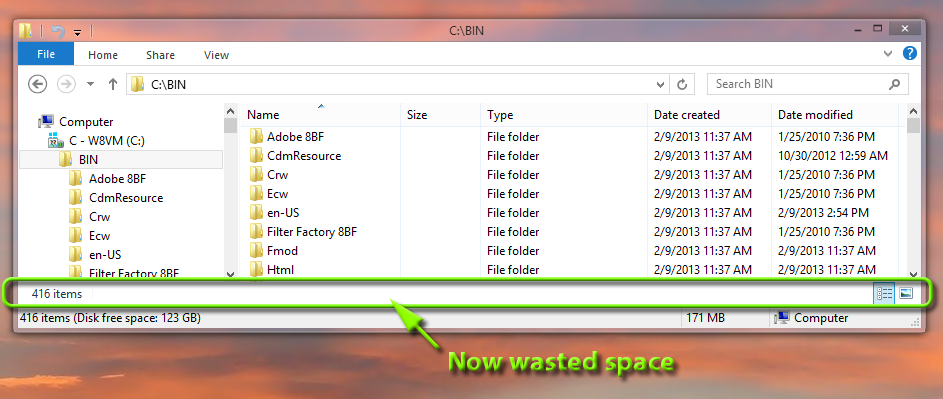
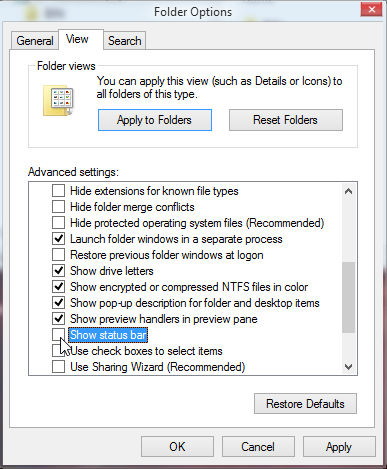

Never mind, I found it.

-Noel
| Classic Shell http://www.classicshell.net/forum/ |
|
| Any Way to Remove the Now Obsolete Explorer Status Bar? http://www.classicshell.net/forum/viewtopic.php?f=8&t=1264 |
Page 1 of 1 |
| Author: | NoelC [ Tue Sep 17, 2013 7:40 am ] |
| Post subject: | Any Way to Remove the Now Obsolete Explorer Status Bar? |
I applaud your having recreated the status bar at the bottom of File Explorer windows. Awesome! Is there a way to get rid of the half-baked status bar Windows 8 puts in there? The things it shows I don't need, and it's now chewing up space I'd rather have to show files and folders. Seems to me it's optional, but I am drawing a mental blank on how to disable it...  -Noel |
|
| Author: | NoelC [ Tue Sep 17, 2013 7:48 am ] |
| Post subject: | Re: Any Way to Remove the Now Obsolete Explorer Status Bar? |
Never mind, I found it.  -Noel |
|
| Author: | Jcee [ Wed Sep 18, 2013 5:55 am ] |
| Post subject: | Re: Any Way to Remove the Now Obsolete Explorer Status Bar? |
This may be a bug, as the new status bar should hide the old one, at least i'm pretty sure it did for me.. |
|
| Author: | Gaurav [ Wed Sep 18, 2013 6:08 am ] |
| Post subject: | Re: Any Way to Remove the Now Obsolete Explorer Status Bar? |
AFAIK Classic Shell does not modify system settings, so the built-in status bar won't be automatically hidden. |
|
| Author: | Jcee [ Wed Sep 18, 2013 8:48 am ] |
| Post subject: | Re: Any Way to Remove the Now Obsolete Explorer Status Bar? |
that may be, as I dont explicitly remember having a status bar before the install, i think i may have removed it a while ago, because it was mostly redundant anyways.. |
|
| Author: | Ivo [ Wed Sep 18, 2013 9:05 am ] |
| Post subject: | Re: Any Way to Remove the Now Obsolete Explorer Status Bar? |
I don't remember for certain, but I think the status bar is not shown by default. So the assumption goes that if you know how to turn it on in the first place you should know how to turn it off. |
|
| Author: | Gaurav [ Wed Sep 18, 2013 9:27 am ] |
| Post subject: | Re: Any Way to Remove the Now Obsolete Explorer Status Bar? |
In Windows 8, the built-in status bar is on by default (at least clicking "Restore Defaults" on the View tab doesn't turn it off). In Windows 7 and earlier, it was definitely off by default. |
|
| Author: | NoelC [ Mon Sep 30, 2013 7:23 am ] |
| Post subject: | Re: Any Way to Remove the Now Obsolete Explorer Status Bar? |
Ivo wrote: I don't remember for certain, but I think the status bar is not shown by default. So the assumption goes that if you know how to turn it on in the first place you should know how to turn it off. Thing is time passes, brain cells die. -Noel |
|
| Page 1 of 1 | All times are UTC - 8 hours [ DST ] |
| Powered by phpBB® Forum Software © phpBB Group https://www.phpbb.com/ |
|